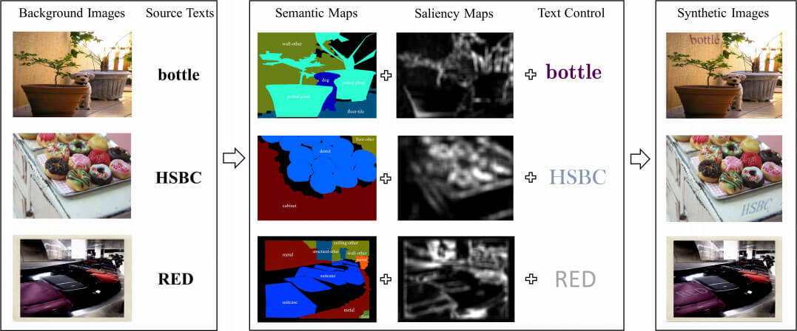
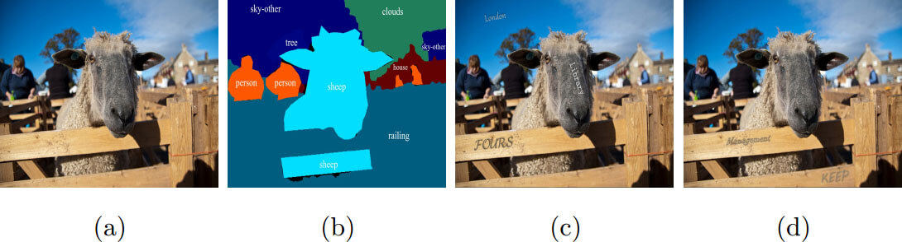
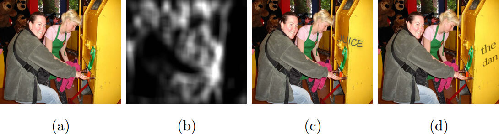
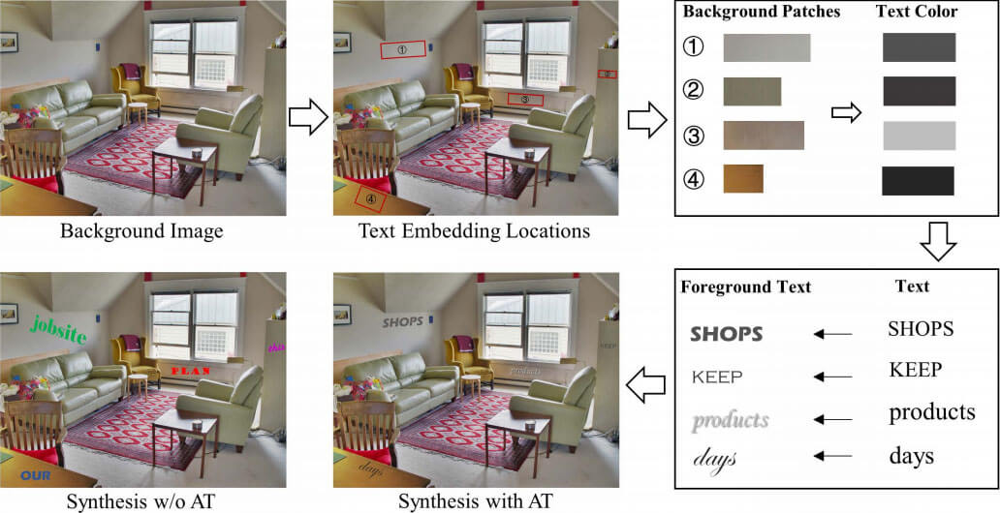
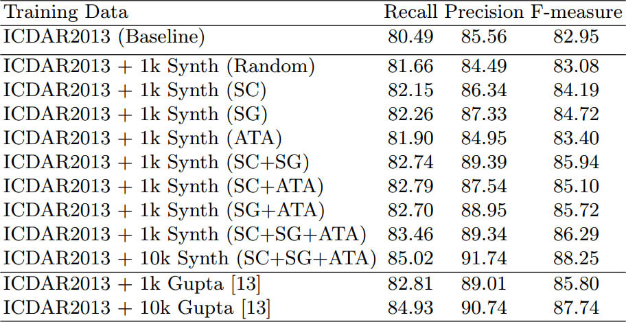
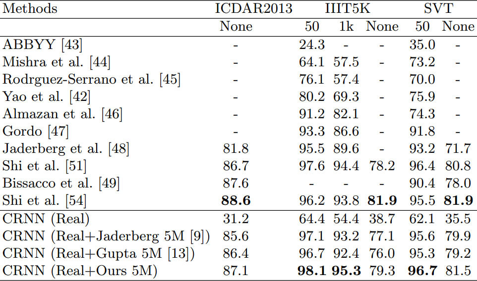
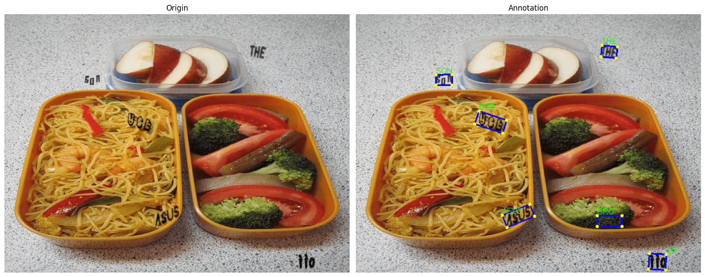

资源
正文
提出了一个新的合成数据集的方式（数据集简称 VISD），在实验中表明其好使。
1 Introduction
研究了三种方法来应对 DNN 训练中的图像注释挑战。
创新点：

所提出的场景文本图像合成技术：
如左侧框所示，给定要嵌入背景图像中的背景图像和源文本，首先确定语义图和显著性图，然后将其组合以识别语义上合理和适合的文本嵌入位置。
根据背景图像中嵌入位置周围的颜色、亮度和上下文结构，进一步自适应地确定源文本的颜色、明亮度和方向。
右侧框中的图片显示了通过所提出的技术合成的场景文本图像。
Image Synthesis
Scene Text Detection
Scene Text Recognition
3 Scene Text Image Synthesis
所提出的场景文本图像合成技术：
从两种类型的输入开始，包括“Background Images”和“Source Texts”
给定背景图像，可以通过组合它们的“Semantic Maps“和”Saliency Maps”来确定文本嵌入的区域
“Semantic Maps” 可用作语义图像分割研究中的基本事实
“Saliency Maps”可以使用现有的显著性模型来确定
可以根据确定的文本嵌入区域的颜色和亮度自适应地估计源文本的颜色和强度
最后，“合成图像”是通过将渲染文本放置在计算出的嵌入位置来生成的。
3.1 Semantic Coherence
语义连贯（SC）是指文本应该嵌入背景图像中语义敏感区域的目标。例如，文本应该放在栅栏板上，而不是天空或羊头上，因为在真实场景中很少看到文本。因此，SC 有助于创建语义上更敏感的前景-背景配对，这对于通过使用合成图像来学习/训练的视觉表示以及对象检测和识别模型非常重要。

3.2 Saliency Guidance

适合于文本嵌入的位置可以通过以下方式来确定：对所计算的显著性图进行阈值处理。在我们实现的系统中，使用了全局阈值，该阈值通过计算的显著性图的平均值简单地估计显著性指导有助于将文本嵌入语义敏感区域内的正确位置。显著性引导的使用进一步有助于提高合成图像的逼真度以及检测和识别模型的学习视觉表示。
3.3 Adaptive Text Appearance
将合成图像应用于训练场景文本检测和识别模型时，有效控制源文本和背景图像之间的对比度对于合成图像的有用性非常重要。
设计了一种自适应对比技术，根据源文本在真实场景中的样子来控制源文本的颜色和亮度。其思想是搜索场景文本图像块（在现有数据集中的大量场景文本注释中容易获得），其背景具有与所确定的背景区域相似的颜色和亮度。然后可以通过参考搜索到的场景文本图像块内的文本像素的颜色和亮度来确定源文本的颜色和明亮度。
对于每个文本注释，首先通过使用所研究的文本注释周围的背景区域来构建 HoG（定向梯度直方图）特征 H b H_b H b ( μ L , σ L ) (\mu_L,\sigma_L) ( μ L , σ L ) ( μ a , σ a ) (\mu_a, \sigma_a) ( μ a , σ a ) ( μ b , σ b ) (\mu_b, \sigma_b) ( μ b , σ b ) H b H_b H b ( μ L , σ L ) (\mu_L, \sigma_L) ( μ L , σ L ) ( μ a , σ a ) (\mu_a, \sigma_a) ( μ a , σ a ) ( μ b , σ b ) (\mu_b, \sigma_b) ( μ b , σ b )
P = { H b 1 : ( μ L 1 , σ L 1 , μ a 1 , σ b 1 ) , . . . H b i : ( μ L i , σ L i , μ a i , σ a i , μ b i ) , . . . } P=\left\{H_{b_1}:(\mu_{L_1}, \sigma_{L_1}, \mu_{a_1},\sigma_{b_1}),...H_{b_i}:(\mu_{L_i}, \sigma_{L_i}, \mu_{a_i}, \sigma_{a_i}, \mu_{b_i}),...\right\}
P = { H b 1 : ( μ L 1 , σ L 1 , μ a 1 , σ b 1 ) , . . . H b i : ( μ L i , σ L i , μ a i , σ a i , μ b i ) , . . . }
H b H_b H b ( μ L , σ L ) (\mu_L,\sigma_L) ( μ L , σ L ) ( μ a , σ a ) (\mu_a,\sigma_a) ( μ a , σ a ) ( μ b , σ b ) (\mu_b,\sigma_b) ( μ b , σ b ) H s H_s H s H s H_s H s H b H_b H b
可以通过取相应的 $(\mu_L,\mu_a,\mu_b) $ 加上 ( σ L , σ a , σ b ) (\sigma_L, \sigma_a, \sigma_b) ( σ L , σ a , σ b )

4 Implementations
4.1 Scene Text Detection
用 EAST 做测试模型。
4.2 Scene Text Recognition
使用 CRNN 模型来训练所有场景文本识别模型。
5 Experiments
5.1 Datasets and Evaluation Metrics
使用的评估数据集：
ICDAR 2013
ICDAR 2015
MSRA-TD500
IIIT5K
SVT
5.2 Scene Text Detection

这把消融实验和对比实验全放一起了。
5.3 Scene Text Recognition

6 Conclusions
好使。未来研究方向：进一步改进源文本的外观。
7 Acknowledgement
项目资助。
数据集可视化
1 2 3 4 5 6 7 8 9 10 11 12 13 14 15 16 17 18 19 20 21 22 23 24 25 26 27 28 29 30 31 32 33 34 35 36 37 38 39 40 41 42 43 44 45 46 47 import cv2import osimport matplotlib.pyplot as pltimport numpy as np987 r'D:\dataset\VISD\10K\image\\' r'D:\dataset\VISD\10K\text\\' '1image_' + str (index) + '.jpg' )'1image_' + str (index) + '.txt' )open (label_path, 'r' )for annotation in annotations:',' )int (num) for num in [annotation_list[0 ], annotation_list[2 ], annotation_list[4 ], annotation_list[6 ]]]int (num) for num in [annotation_list[1 ], annotation_list[3 ], annotation_list[5 ], annotation_list[7 ]]]1 ][:-1 ]True , color=(255 , 0 , 0 ), thickness=2 )for p in points:0 ], p[1 ]), int (min (height, width) / 150 ), (0 , 255 , 255 ), -1 )0 ], y[0 ] - int (min (height, width) / 150 )), cv2.FONT_HERSHEY_SIMPLEX,min (height, width) / 1000 , (0 , 255 , 0 ), int (min (height, width) / 500 ))1 , ncols=2 , figsize=(16 , 9 ))0 ].imshow(cv2.cvtColor(image_origin, cv2.COLOR_BGR2RGB))0 ].axis('off' )0 ].set_title('Origin' )1 ].imshow(cv2.cvtColor(image, cv2.COLOR_BGR2RGB))1 ].axis('off' )1 ].set_title('Annotation' )

转换成 MindOCR 可读取的格式
1 2 3 4 5 6 7 8 9 10 11 12 13 14 15 16 17 18 19 20 21 22 23 24 25 26 27 28 29 30 31 32 33 34 35 36 37 38 39 40 41 42 43 44 45 46 47 48 49 50 51 import osimport numpy as npr'D:\dataset\VISD\10K\image\\' r'D:\dataset\VISD\10K\text\\' r'D:\dataset\VISD\10K\\' "train_det_gt.txt" "" for label_file in os.listdir(label_dir):print ('------' , label_file, '------' )int (label_file.split('_' )[1 ].split('.' )[0 ])'.' )[0 ] + '.jpg' open (label_path, 'r' )"\t[" for i, annotation in enumerate (annotations):',' )int (num) for num in [annotation_list[0 ], annotation_list[2 ], annotation_list[4 ], annotation_list[6 ]]]int (num) for num in [annotation_list[1 ], annotation_list[3 ], annotation_list[5 ], annotation_list[7 ]]]1 ][:-1 ]'{"transcription": "' '", "points": [' for j, point in enumerate (points):"[" str (point[0 ])", " str (point[1 ])if j != len (points) - 1 :"], " else :"]]}" if i != len (annotations) - 1 :", " ']\n' with open (os.path.join(save_dir, save_file), 'w' ) as file: